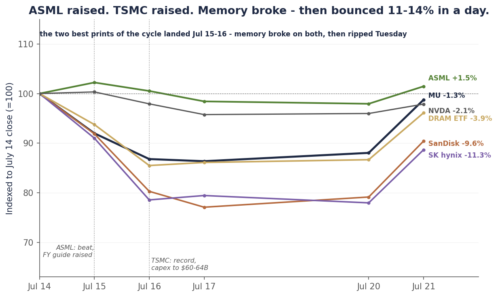

Single-name update · Memory · The stop
Micron closed below $900. Our rule said sell. We didn’t.
- The call: long Micron from ~$668 (coverage began May 6) — week ten
- Realized: ~60% booked into the $950–$1,200 scale-out (avg ~$1,100) — +65%, banked
- Runner: ~40% (15 shares) still open at $970.82 (+45% paper) — held in violation of the $900 stop that fired July 16; graded F on process below
- The line: any close below $848.95 → runner sold at the next open, in full, no override
- Decision dates: hyperscaler capex prints Jul 22–31 (MSFT Jul 29) — publish a re-underwritten hold case or exit regardless · MU FQ4 ~late Sept
Last Tuesday we published with Micron at $983.12 and the stop ~$83 away. Here is what the tape did next: $904.28 → $853.20 → $848.95 → $865.46 → $970.82. Thursday, July 16, was the close that mattered — $853.20, the first close below $900 since our coverage began. That was the trigger we pre-committed to in June and repeated in every note since: a close below $900 and we are out in full. This note exists to tell you, before it tells you anything else, that we did not sell. The runner is still on. It closed below the line three straight sessions while we watched, and tonight — after a 12.2% rip to $970.82 — the violation sits about seven points ahead of where obeying the rule would have left us. We are writing this note anyway, because ahead is not the same as right, and because a discipline you only report when it flatters you is not a discipline. It’s marketing.
The week itself vindicated the framework even as we failed to execute it. The two best prints of the cycle — ASML’s beat-and-raise to €43–45 billion and TSMC’s record quarter with capex hiked to $60–64 billion — broke memory on contact: Micron lost 13.2% in two sessions, SanDisk fell to 42% below its June record, SK hynix round-tripped its entire ETF-launch pop. Three record earnings events in three weeks — Samsung, ASML, TSMC — and memory sold off on all three, because the capex that proves the boom is also the purchase order for memory’s future supply. Then this morning Morgan Stanley called the weakness a buying opportunity, BofA put Micron on its US 1 list at $1,550, and the whole complex ripped 11–14% in a day. That is the tape we froze in front of: one that whipsaws double digits on commentary, in both directions, inside a week.
So this note does three things, in order. It grades the violation — an F on process, regardless of tonight’s P&L, with the reasons named and none of them accepted as excuses. It marks the ten-week call honestly: ~60% booked near $1,100 (+65%, realized), the ~40% runner still open at $970.82 (+45%, paper), a blended ~+57% marked to tonight against ~+50% had the rule been honored. And it installs the line we will actually live by, in public, where it can’t be quietly forgotten: any close below $848.95 — the low-water close of this violation — and the runner is sold, no debate, no second grace. And at the hyperscaler capex prints next week, we either publish a re-underwritten thesis that earns the hold on its own merits, or we exit regardless of price. If we break this one too, stop reading us on risk. That’s the deal.
Chart 1 — The whole call
Ten weeks, one chart: in at ~$668, ~60% booked near $1,100 — and then three closes below the line we said would end it, with the runner still on.
![MU daily closes from May 5 through July 21, 2026: coverage begins near $668 on May 6, the stock runs through a shaded $950-to-$1,200 scale-out zone to the June 25 record close of $1,213.56, then declines through July. July 15 closes at $904.28, four dollars above the dashed $900 stop line; July 16 closes at $853.20, the first close below $900 — the rule said out in full; July 17 ($848.95) and July 20 ($865.46) also close below the line, marked in red with the annotation that we didn't sell and the runner is still held; July 21 closes at $970.82, up 12.2%, where the open runner is marked.](assets/reports/mu-stop-2026-07-21-c1-call.png)
Daily closes, May 5–July 21, 2026. The $900 line was published June 23 and never adjusted. July 16’s $853.20 was the first close beneath it; the runner was not sold and remains open at tonight’s $970.82. Source: bpleon price feed.
The best week of numbers
Walk the two days carefully, because the pattern is the thesis. Wednesday pre-open, ASML — our newest position, and the subject of the initiation note we published on the print — delivered close to a perfect quarter: €9.3 billion of sales against a guide of €8.4–9.0 billion, a 54.0% gross margin against a guided 51–52%, a third-quarter guide of €11–12 billion that implies the steepest revenue quarter in company history, and a full-year outlook raised to €43–45 billion — the third raise in six months. That is the answer to the question we posed last Tuesday: the 2027 order book is real, the capex boom extends, the “peak-out” case lost. ASML rose 2.2% on the day, helped by a soft June CPI print that lifted the whole tape. Micron fell 8.0% — to $904.28, four dollars above the stop.
Thursday, TSMC did it again, bigger: a fifth consecutive record quarter, a raised full-year revenue outlook, and 2026 capital spending hiked to $60–64 billion from $52–56 billion. Micron fell another 5.65%, closing at $853.20 — through the line. SanDisk lost roughly a fifth of its value across the two sessions; by Friday’s $1,354.82 close it sat 42% below its June 25 record close, with NAND spot reports and rising-supply chatter doing the storage-specific damage. SK hynix, which had jumped to $193.92 the previous Tuesday on the leveraged-ETF launches, closed Monday at $151.16 — the entire pop, round-tripped, in four sessions.
Hold the two halves of the week side by side and the market’s message is legible. The companies that spend on the AI buildout printed records and raised — and their stocks held or rose. The companies whose product that spending will eventually supply got sold on those exact same numbers. A raised ASML guide means more EUV tools shipping into DRAM fabs in 2027. A $64 billion TSMC budget means the foundry side of the complex is answering demand at record scale. To the memory bull, those headlines are confirmation; to the memory holder, they are the supply curve being financed in real time. Two weeks ago we watched the market sell Samsung’s world-record profit; last week it sold the best toolmaker print and the best foundry print of the cycle. Three record earnings events, three memory selloffs. That is not an accident. It is a repricing of the forward, happening in public, one confirmation at a time.
Chart 2 — The week, indexed
From the July 14 close: ASML absorbed its own good news and finished green — memory broke double digits on the same headlines, then ripped 11–14% today on analyst defense.

Closing prices indexed to July 14, 2026 (=100), through July 21. The two dotted verticals mark the ASML beat-and-raise (Jul 15) and TSMC’s record-and-capex-hike (Jul 16) — the sessions on which memory broke. Source: bpleon price feed.
We owe the tape one correction on our own framing. Last Tuesday we wrote that ASML’s print would settle the argument: a full 2027 backlog and “every memory multiple — including the one we’re cautious on — has to be revisited higher.” The backlog came in full, and memory multiples went down. Our either/or missed the third branch: the same capex that proves the demand boom is also the purchase order for memory’s future supply. Confirmation of the boom re-rated the toolmaker and de-rated the commodity — because tools become wafers, and wafers become price competition. That is precisely the supply-crossover logic of our July 5 re-underwrite, arriving a year early through the order book. We got the instrument right — we own ASML, which got paid on the very report that hurt memory — and the framing incomplete. Both things are true, and only one of them cost money.
The rule fired. We didn’t.
The mechanics, so the record is exact. The rule — published June 23, repeated July 2, July 8 and July 14 — was a closing rule: intraday breaks don’t count, a close below $900 does. It survived one honest test: earlier this month Micron pierced $900 intraday, closed above it, and we correctly did nothing. On Wednesday July 15 the stock closed at $904.28 — the market walked up to the line and stopped four dollars short. On Thursday July 16 it closed at $853.20. The rule said: out in full, next session. Friday came and went. So did Monday. The runner — 15 shares, the ~40% of the position we’d carried since June — stayed in the account through three consecutive closes below the line. Tonight it sits at $970.82, and the honest label for what happened is not “we re-evaluated” or “we widened the band.” It is: the rule fired and we froze.
Why? The reasons are worth naming precisely because none of them survive contact with our own standards. The stock had gapped $50 through the line on the TSMC news into a storage complex down 40% in three sessions — selling there felt like selling the bottom of a flow cascade, the same flow-not-fundamental pattern we had correctly called twice. The hyperscaler capex prints — the single most important read for the whole thesis — were five sessions away. TrendForce’s pricing data never confirmed the panic. Every one of those is a reason, and on another week we might have written a note titled “why we’re overriding the stop” before the fact, with a new line and a dated re-underwrite. That would have been a process. What actually happened was silence: the trigger printed, and we did neither the selling nor the override note. A rule you only follow when it’s comfortable is not a rule — it is a prediction wearing a seatbelt costume.
Now the part that stings in the other direction. Tonight the freeze is ahead: the runner at $970.82 is 14.4% above the ~$849 the rule would have realized, which puts the blended call about seven points ahead of the disciplined counterfactual. If we were selling you a system, this is where we’d quietly re-label the violation “conviction.” We are not. The same freeze that is ahead tonight is the freeze that rides to $625 in our own bear case — which we still assign 30% — and the fuel for today’s rip was analyst commentary: the same fuel as the July 14 pop that round-tripped inside 48 hours. One favorable draw does not audit a process. We have spent ten weeks writing that the scale-out and the stop are why this call worked; it would be obscene to abandon that logic the first time abandoning it happened to pay.
So here is the accounting, and the repair. The violation gets an F on process — recorded on the track record alongside the calls, because process failures are results that haven’t happened yet. The repair is a line with no discretion left in it: any close below $848.95 — the lowest close of this violation, the level the market has already shown it can print — and the runner is sold at the next open, in full, with no note, no debate, and no second override. And the hold itself now has a deadline: the hyperscaler capex prints land July 22–31, Microsoft on the 29th. Either that window produces a re-underwritten case for the runner that stands on its own — published, with fresh kill-shots — or we exit into those prints regardless of price. We said it above and we mean it operationally: if we break this line too, you should stop trusting anything this site says about risk, because we will have proven the risk talk decorative.
The ledger, marked — not closed
With the runner still open, there is no final scorecard — only an honest mark. Coverage began May 6 at ~$668 with a $1,100 target the Street then considered aggressive. The stock ran to $1,213.56 by June 25. We booked roughly 60% of the position through the pre-planned $950–$1,200 scale-out (average ~$1,100): +65%, realized, banked — that leg is beyond the reach of anything the runner does. The ~40% runner, marked at tonight’s $970.82, shows +45% on paper. Blend the realized and the open and the call stands at ~+57% marked to tonight, against ~+50% had the stop been honored at ~$849, and against +45% for never having sold a share. The scale-out remains the single best decision of the ten weeks: it converted a paper rally into banked gains while KeyBanc printed $1,750 and Cantor $2,000, and it is the only reason a stop violation is a footnote rather than a catastrophe risk.
Chart 3 — The ledger
The banked leg (+65%), the open runner (+45% on paper), the marked blend (~+57%) — and the ~+50% the rule would have locked. Ahead by luck is still ahead; it’s just not credit.
![Horizontal bar ledger of the Micron call marked to the July 21 close, all returns against the $668 coverage basis: the roughly 60% booked through the scale-out returned about +65% realized; the roughly 40% runner still open at tonight's $970.82 shows about +45% unrealized, drawn as a dashed open bar; the blended call marked tonight is about +57%; and a hatched counterfactual bar shows about +50% had the rule been honored with the runner out near $849 on July 17. An annotation notes the violation is about seven points ahead tonight, and ahead is not the same as right.](assets/reports/mu-stop-2026-07-21-c3-ledger.png)
All legs vs. the ~$668 May 6 coverage basis. The runner bar is open (unrealized) and moves with the tape; the counterfactual assumes the published rule’s exit at the July 17 close. Source: bpleon research.
The call ledger beneath the mark, both columns, because a scorecard with one column is an advertisement:
- Right: the boom, early. Long at $668 in May on AI-memory pricing, before the FQ3 blowout, the $100B contract framework, and the melt-up. The core thesis paid for everything else.
- Right: the scale-out. Selling 60% into strength between $950 and $1,200 looked timid while the Street printed $1,750–$2,000 targets. It is the entire reason tonight’s note is about process, not survival.
- Right: flows, not fundamentals. The July 1 crash (Korean ETF unwind), the July 14 pop (US ETF launches), and this week’s double-digit whipsaws — each called as money that has to move, not information. The tape keeps proving it.
- Wrong: the June direction call. We said the FQ3 print was priced and would fade; it ripped 16%. Owned then, still owned.
- Wrong: the ASML either/or. We framed a full backlog as bullish for memory multiples; the market read it as the supply answer being financed and de-rated the commodity instead. The toolmaker position covered the miss; the framing was incomplete.
- Wrong, and the subject of this note: the execution. The stop fired and we froze. F on process, graded above, new line installed. The other five entries earn no offset against this one.
The position, the line, the referee
So the book tonight, stated plainly: still long the 15-share Micron runner — in violation, under the new line — plus the two positions the re-underwrite preferred all along. The DRAM basket (Samsung, SK hynix, Micron and the storage names together) took a 15% drawdown to $52.34 mid-week and has recovered most of it at $58.85; it remains the cleaner way to own memory pricing, because it holds the un-capped names that keep their upside. And ASML — initiated at ACCUMULATE with a ~$2,000 probability-weighted target — closed at $1,801.51, green on the week that broke the commodity, which is the entire point of owning the toolmaker: it got paid on the exact report that hurt memory. The barbell did its job in its first week; the single name is the part of the book that failed — or rather, the part where we failed.
On Micron the analytical map is unchanged, and it matters that we say so: base ~$1,100, bull ~$1,550 (the number BofA’s new target now sits on exactly), bear ~$625 at 30%. Nothing on the published thesis-break list — confirmed HBM4 share loss, contract prints below forecast, a 200-day breakdown — has triggered. Morgan Stanley’s claim today that Q3 memory prices could rise ~25% sits above the TrendForce +13–18% band we track; if that’s where contracts settle, it is genuinely bullish for the industry — and it accrues most to the un-capped names, which is why the basket, not Micron, is our expression of it. The two findings that pushed our target to the Street’s low end stand un-refuted: the SCA ceilings that cap Micron’s share of any price boom, and an HBM4 allocation reading 5–10% against the 20–25% it held in HBM3E.
Which frames next week honestly: the hyperscaler capex prints, July 22–31, Microsoft on the 29th, are the referee — for the complex, and specifically for the runner. If the buyers of all this compute raise again, the supply-wave fear gets a demand answer, and a re-underwritten case for holding Micron may clear our bar; we would publish it with fresh kill-shots before keeping a single share. If they blink — or if the case doesn’t clear — the runner goes, into whatever price the prints leave behind. And beneath all of it sits the mechanical floor: one close below $848.95 and the decision makes itself. Three ways out, all of them dated, none of them discretionary. That is what rebuilding a discipline in public looks like: not a promise to do better, but a structure that doesn’t need us to.
| Item | Status |
|---|---|
| As of | July 21, 2026 close |
| Position | Still long the ~40% runner (15 shares) — in violation of the published $900 stop, which fired on the July 16 close ($853.20). Graded F on process in this note. |
| The trigger | Jul 16 close $853.20 — first close below $900 (Jul 15 closed $904.28, $4 above); Jul 17 ($848.95) and Jul 20 ($865.46) also closed below the line |
| The ledger, marked | ~+57% blended to tonight (60% realized at ~$1,100 avg, +65%; 40% open at $970.82, +45% paper) vs. ~+50% had the rule been honored (~$849 fill) vs. ~+45% never selling |
| Price | $970.82 close (+12.2% today on MS/BofA defense; −20.0% from the June 25 record) |
| The map (unchanged) | Base ~$1,100 · Bull ~$1,550 (= BofA’s new target) · Bear ~$625 (30%) |
| The new line | Any close below $848.95 = runner sold at the next open, in full, no debate, no second override. Break this and the risk framework on this site is void — hold us to that. |
| The deadline | Hyperscaler capex prints Jul 22–31 (MSFT Jul 29): publish a re-underwritten hold case with fresh kill-shots, or exit regardless of price |
| Rest of the book | DRAM basket ($58.85, recovered most of the drawdown) + ASML $1,801.51 — ACCUMULATE, PW ~$2,000 (green through memory’s break) |
| Watch | Q3 contract prints vs. MS’s +25% / TrendForce +13–18% · HBM4/Rubin allocation news · MU FQ4 ~late Sept |
Disclosure: I/we have beneficial long positions in the shares of MU, ASML, and a memory-sector ETF (ticker DRAM) through stock ownership. The Micron position is the residual ~40% runner (15 shares) described above — held, as this note discusses at length, in violation of the $900 closing stop published in our June 23 note and repeated in our July 2, July 8 and July 14 notes, which triggered on the July 16, 2026 close of $853.20; roughly 60% of the original position was sold through the disciplined June scale-out as previously disclosed. I wrote this article myself, and it expresses my own opinions. I am not receiving compensation for it. I have no business relationship with any company whose stock is mentioned. This is research and analysis only, not personalized financial advice. This commentary is for informational and educational purposes only and does not constitute investment, tax, or legal advice or a solicitation to buy or sell any security. Past performance is not indicative of future results. Readers should conduct their own research and consult a qualified financial professional before making investment decisions. Sources include the bpleon price feed; ASML’s Q2 2026 results and raised full-year outlook via the company’s July 15 press release and Form 6-K; TSMC’s Q2 results and capex guidance via company disclosures and press reporting (TradingKey, Invezz); the July 21 analyst actions — Morgan Stanley (Joseph Moore), BofA (Vivek Arya, US 1 list, $1,550 target) and UBS — as reported by Finbold and Yahoo Finance; SanDisk/NAND pricing reports via press coverage; TrendForce contract-price data; and sell-side consensus via Benzinga/MarketBeat/stockanalysis. See disclaimer.